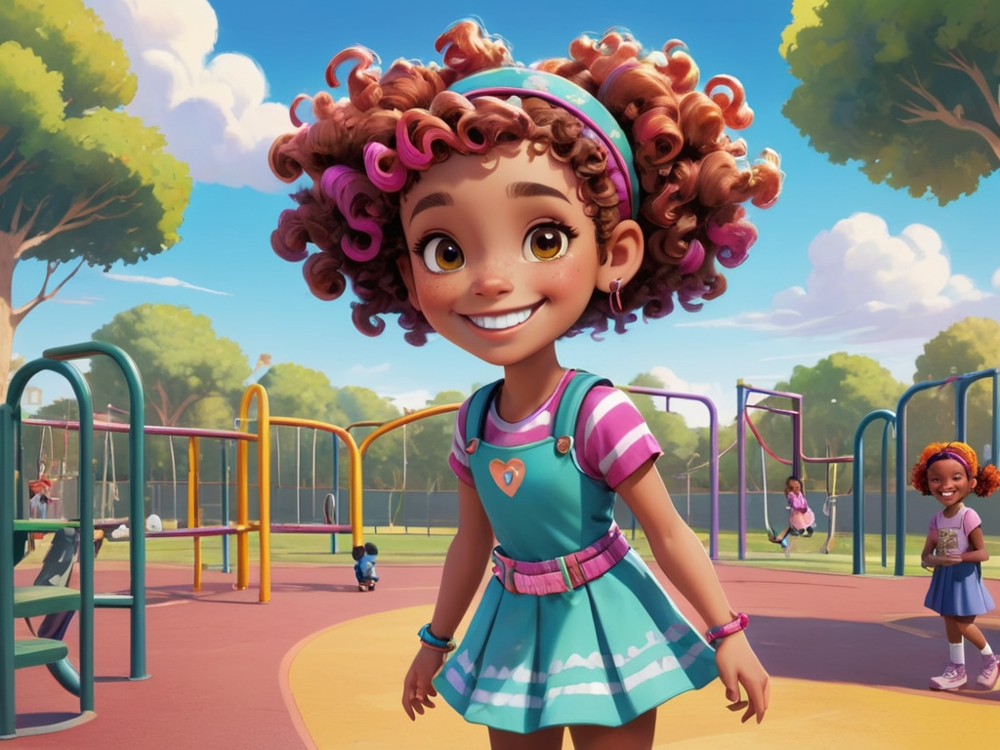
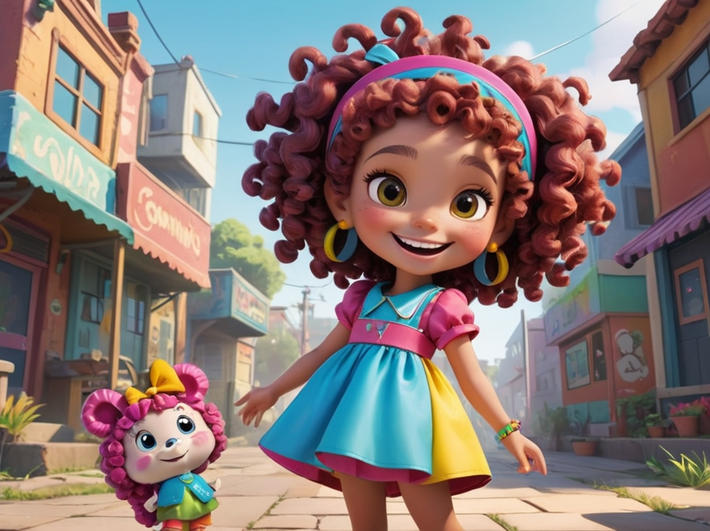
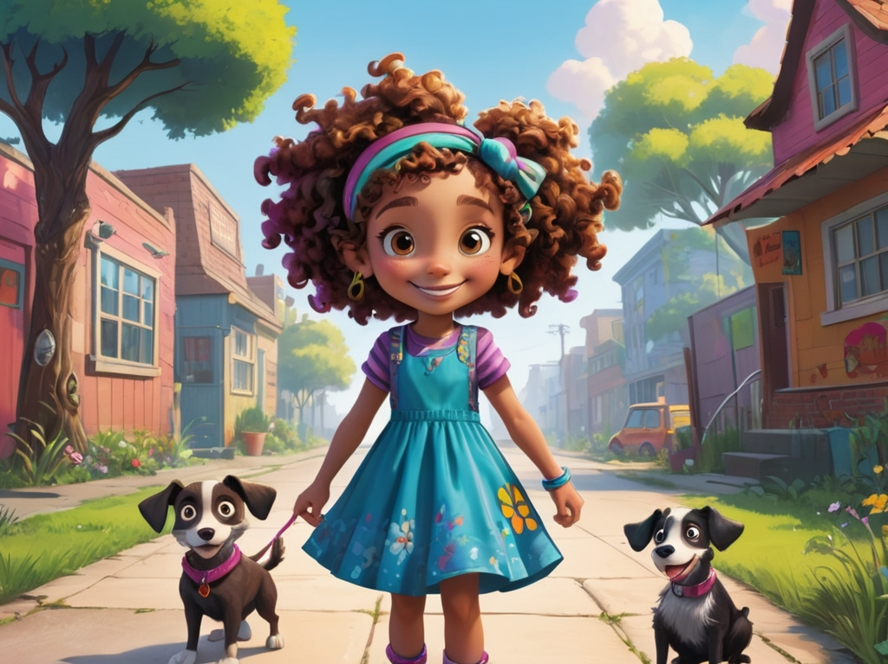
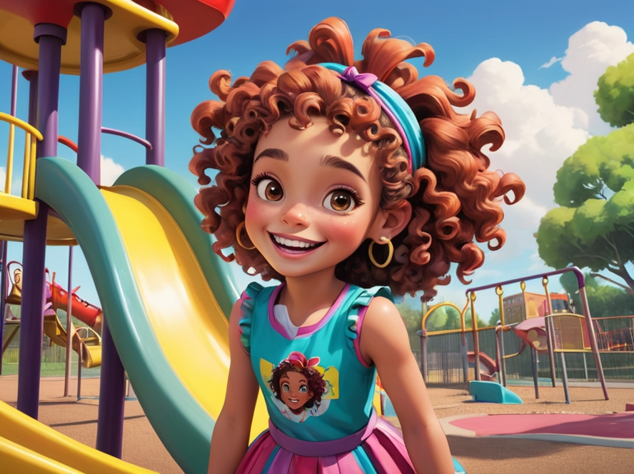
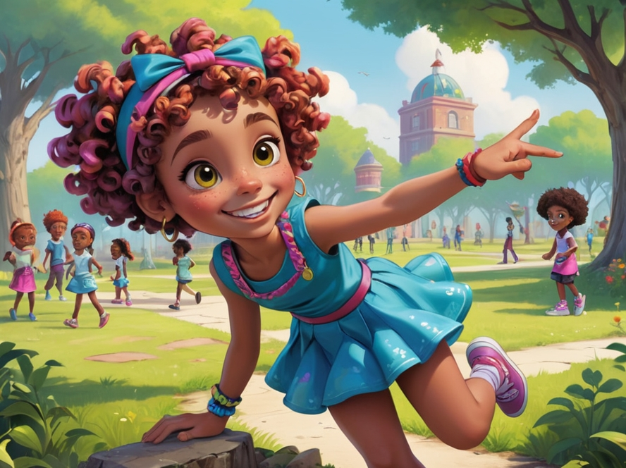
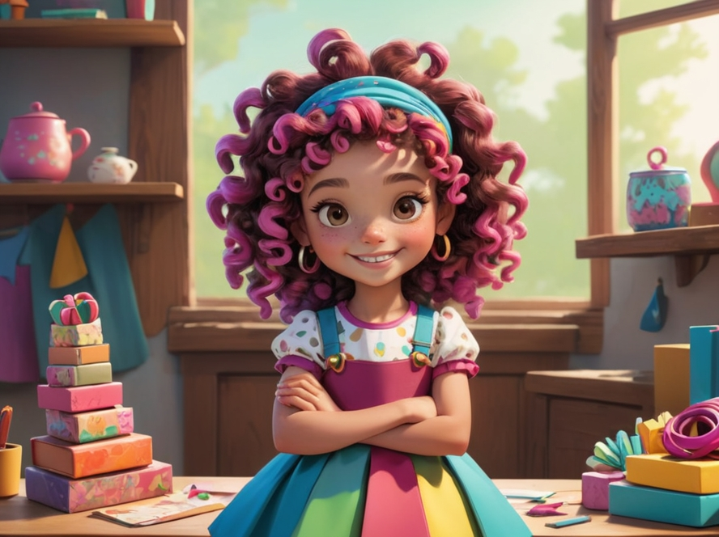
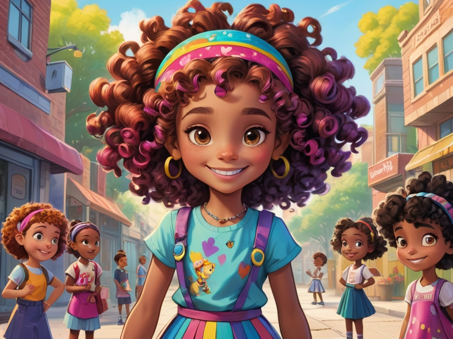
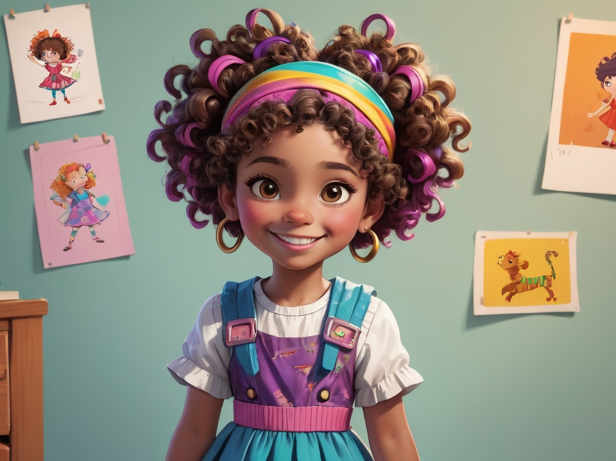
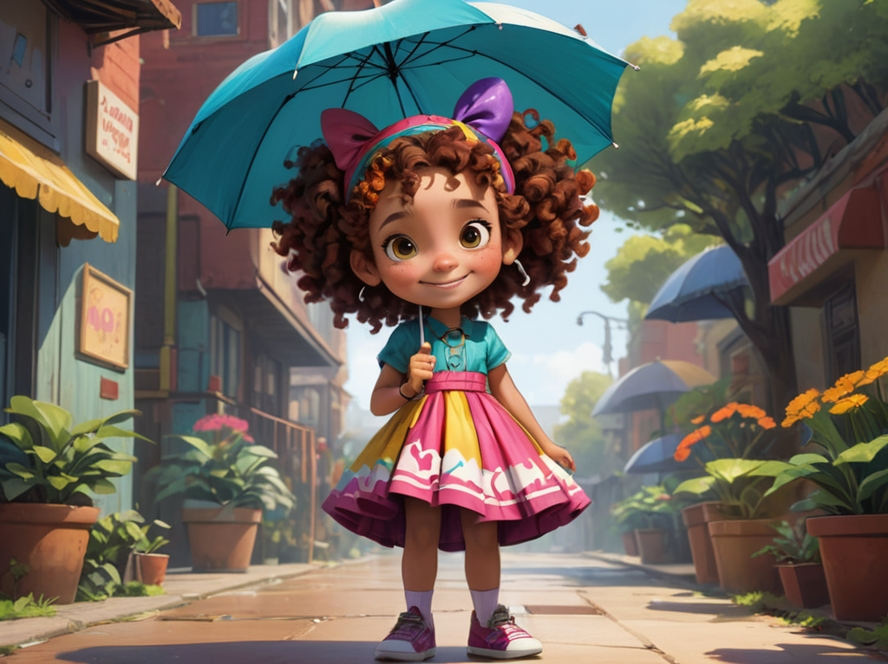
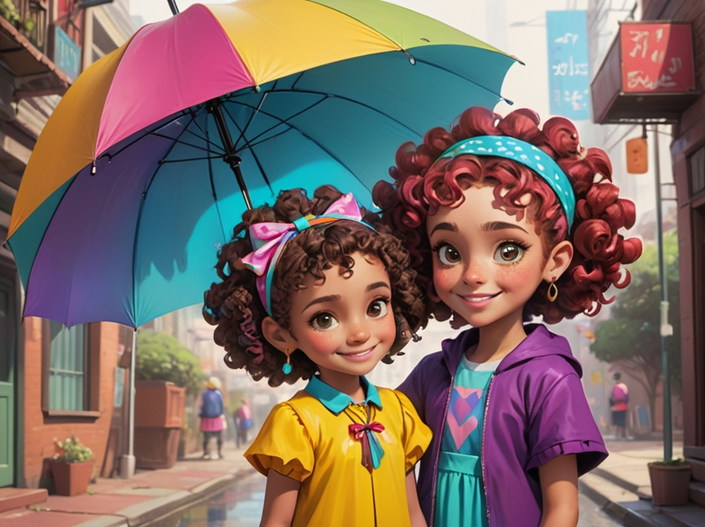

1. Annie and the New Friend
Annie sees a new student on the playground. Encouraging children to make friends with new people, learn to share, and communicate.
2. Learning to Share
Annie has a beautiful toy, but she sees other kids who want to play with it. Learning to share and understanding that others also have needs.
3. Helping Others
Annie sees a lost dog and decides to help it find its way home. Teaching children to have empathy and help others in need.
4. Facing Challenges
Annie is at the playground and feels a little scared of going down the slide, but she decides to try. Encouraging children to face challenges and be brave in trying new things.
5. Protecting the Environment
Annie and her friends are playing in the park when they find some litter, and she decides to pick it up. Teaching children to care for the environment and keep their surroundings clean.
6. Sharing Joy
Annie is making crafts with her family and decides to give her handmade gifts to her friends. Learning to share happiness with others and enjoy spending time together.
7. Respecting Others
Annie sees a child being excluded because of their different skin color or background, so she goes over to comfort them. Teaching children to respect everyone’s differences and to be kind to all.
8. Accepting Failure
Annie tries to draw, but her first attempt isn’t great, and she feels a little discouraged. Teaching children to accept failure, learn from it, and keep trying.
9. Listening to Parents’ Advice
Annie’s mom reminds her to take her umbrella, and although Annie doesn’t want to, she’s thankful later for listening. Learning to listen to elders’ advice and understanding that it’s for their own good.
10. Being a Happy You
Annie and her friends are having a great time playing, and in the end, she smiles and says, “Being a happy you is the most important!” Encouraging children to stay positive and enjoy the little joys in life.
